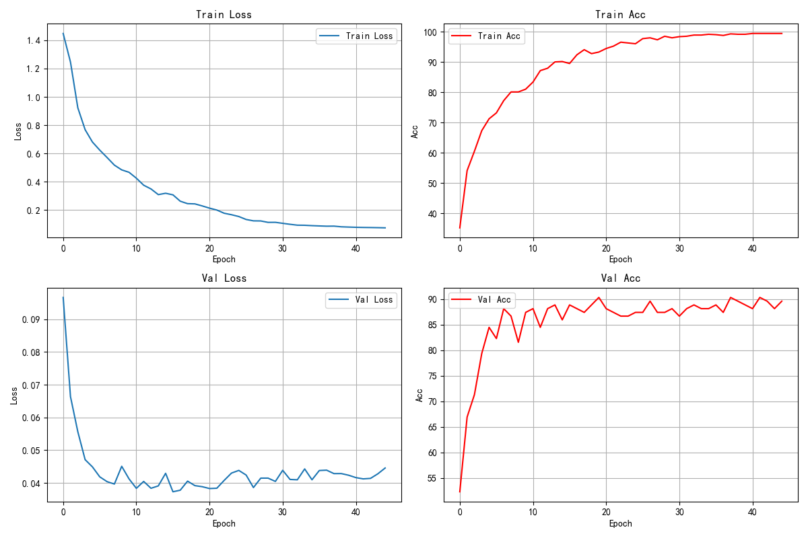

中山大学计算机学院
| 学号 | xxxxxxxx | 姓名 | xxx |
基于 PyTorch 框架搭建卷积神经网络（CNN），对五种中药材图片进行分类识别。
卷积神经网络（Convolutional Neural Network, CNN）是深度学习中最经典、应用最广泛的图像处理架构之一。与传统全连接网络不同，CNN 通过卷积核在图像上滑动计算局部特征，具有局部感知和权重共享两大特性，大幅减少了参数量，同时能够学习图像中的空间层次特征。
（1）卷积层：
卷积层是 CNN 的核心组件。每个卷积层包含若干可学习的卷积核，卷积核在输入特征图上按固定步长滑动，对每个局部区域与卷积核做逐元素乘积并求和，得到输出特征图（Feature Map）。对于输入尺寸为 Hin × Win、卷积核尺寸为 K × K、填充为 P、步长为 S 的情况，输出尺寸为：
Hout = (Hin − K + 2P) / S + 1
Wout = (Win − K + 2P) / S + 1
（2）池化层：
池化层通常跟在卷积层之后，用于下采样，降低特征图的空间尺寸，减少后续层的参数量和计算量，同时增强特征的平移不变性。最大池化（Max Pooling）是最常用的池化方式——在每个局部窗口内取最大值作为输出，保留最显著的特征响应。
（3）批量归一化：
BN 层对每个 Mini-Batch 内的激活值进行标准化处理，使其均值为 0、方差为 1，再通过可学习的缩放与平移参数还原网络的表达能力。BN 能够加速训练收敛、缓解梯度消失问题，并具有一定的正则化作用，减少过拟合风险。
（4）Dropout 正则化：
在训练过程中，Dropout 以一定概率 p 随机"丢弃"（置零）一部分神经元的输出，使得每次前向传播相当于在训练一个不同的子网络。这一机制强制每个神经元不能过度依赖特定其他神经元，有效抑制了过拟合。测试时所有神经元均参与计算，输出按训练时的保留概率进行缩放。
（5）ReLU 激活函数：
ReLU定义为 σ(x) = max(0, x)。相比于 Sigmoid 和 Tanh，ReLU 计算简单、收敛更快，并且对于正输入其梯度恒为 1，有效缓解了深层网络中的梯度消失问题。
（6）交叉熵损失函数：
对于多分类任务，交叉熵损失函数是最常用的选择。给定样本的真实标签 y 和模型预测的类别概率分布 ŷ，交叉熵损失定义为：
L = − Σc yc · log(ŷc)
其中 yc 为 one-hot 编码的真实标签，ŷc 为经过 Softmax 后的预测概率。交叉熵损失能够直接优化模型输出与真实分布之间的差异，配合 Softmax 输出层可实现端到端的分类训练。
（7）Adam 优化器：
Adam结合了动量法（Momentum）和 RMSProp 的优点，对每个参数维护一阶矩估计（均值）和二阶矩估计（方差），自适应调整学习率，具有收敛快、超参数鲁棒等优点，是当前最广泛使用的优化器之一。
（8）学习率调度：
本实验采用 ReduceLROnPlateau 调度器，监控验证集准确率。当验证准确率在 patience 个 epoch 内不再提升时，将学习率乘以 factor（0.5），实现学习率的阶梯式衰减。这样可以让模型在训练后期使用更小的步长精细调参，避免在最优解附近震荡。
（1）CNN 模型定义：
# 使用PyTorch框架建立CNN模型处理图片分类任务 class CNN(nn.Module): def __init__(self,classes=5): super(CNN,self).__init__() # 卷积层：逐层提取图像的空间层次特征 self.features=nn.Sequential( # 第一层卷积: (3,224,224) → (64,112,112) nn.Conv2d(3, 64, kernel_size=5, stride=1, padding=2), nn.BatchNorm2d(64), nn.ReLU(), nn.MaxPool2d(kernel_size=2, stride=2), # 第二层卷积: (64,112,112) → (32,56,56) nn.Conv2d(64, 32, 3, 1, 1), nn.BatchNorm2d(32), nn.ReLU(), nn.MaxPool2d(2, 2), # 第三层卷积: (32,56,56) → (16,28,28) nn.Conv2d(32, 16, 3, 1, 1), nn.BatchNorm2d(16), nn.ReLU(), nn.MaxPool2d(2, 2) ) # 全连接分类层：三层全连接逐级压缩进行分类 self.classifier=nn.Sequential( nn.Linear(16*28*28, 256), nn.ReLU(), nn.Dropout(0.5), nn.Linear(256, 64), nn.ReLU(), nn.Dropout(0.3), nn.Linear(64, classes) ) def forward(self,x): x = self.features(x) # 卷积特征提取 x = torch.flatten(x, 1) # 展平为一维向量 x = self.classifier(x) # 全连接分类 return x
（2）数据预处理与增强：
# 训练集数据预处理与增强 transform = transforms.Compose([ transforms.Resize(256), # 调整短边为256像素 transforms.RandomResizedCrop(224, scale=(0.8, 1.0)), # 随机裁剪并缩放至224x224 transforms.RandomHorizontalFlip(), # 50%概率水平翻转 transforms.RandomRotation(15), # 随机旋转±15度 transforms.ColorJitter(brightness=0.3, # 颜色抖动：亮度、对比度、 contrast=0.3, # 饱和度各±30% saturation=0.3), transforms.ToTensor(), # 转换为张量 transforms.Normalize(mean=[0.485,0.456,0.406], # ImageNet均值-标准差归一化 std=[0.229,0.224,0.225]) ]) # 验证集/测试集数据预处理（不做数据增强） val_transform = transforms.Compose([ transforms.Resize(256), transforms.CenterCrop(224), # 中心裁剪，保持测试一致性 transforms.ToTensor(), transforms.Normalize(mean=[0.485,0.456,0.406], std=[0.229,0.224,0.225]) ])
（3）训练主循环：
def train(epochs, train_loader, val_loader, test_loader):
train_losses, val_losses = [], []
train_accs, val_accs = [], []
best_acc = 0
cnt = 0
for epoch in range(epochs):
epoch_loss, total, correct = 0, 0, 0
for image, label in train_loader:
image, label = image.to(device), label.to(device)
optimizer.zero_grad() # 清空梯度
output = model(image) # 前向传播
loss = criterion(output, label) # 计算损失
loss.backward() # 反向传播
optimizer.step() # Adam 更新参数
epoch_loss += loss.item()
_, predicted = torch.max(output.data, 1)
total += label.size(0)
correct += (predicted == label).sum().item()
train_losses.append(epoch_loss / len(train_loader))
train_accs.append(100 * correct / total)
val_acc, val_loss = evaluate(val_loader) # 验证集评估
val_losses.append(val_loss)
val_accs.append(val_acc)
scheduler.step(val_acc) # 根据验证准确率调整学习率
# 早停机制：连续25个epoch验证准确率未提升则终止训练
if val_acc > best_acc:
best_acc = val_acc
torch.save(model.state_dict(), 'model.pth')
cnt = 0
else:
cnt += 1
if cnt >= 25:
break
return train_losses, train_accs, val_losses, val_accs
（4）数据集划分（分层采样）：
# 按类别分层划分训练集和验证集，确保各类别比例一致 def split_dataset(dataset, train_percent): class_data = {} for i, (_, label) in enumerate(dataset): if label not in class_data: class_data[label] = [] class_data[label].append(i) train_indices, val_indices = [], [] for label, indices in class_data.items(): random.shuffle(indices) split_index = int(len(indices) * train_percent) train_indices.extend(indices[:split_index]) val_indices.extend(indices[split_index:]) train_dataset = Subset(dataset, train_indices) val_dataset = Subset(dataset, val_indices) return train_dataset, val_dataset # 按85:15比例划分训练集和验证集 train_dataset, val_dataset = split_dataset(dataset, 0.85) val_dataset.dataset.transform = val_transform # 验证集使用不含增强的变换
（1）数据增强： 中药材图片数据量有限（每类约 170~190 张），直接训练容易过拟合。代码综合使用了多种数据增强技术——随机裁剪缩放、水平翻转、随机旋转（±15°）和颜色抖动，每次训练迭代时对同一张图片施加随机变换组合，等效于成倍扩充了训练集规模，显著提升了模型的泛化能力。
（2）分层采样划分数据集：
代码中 split_dataset 函数按类别分组后独立划分，确保训练集和验证集中各类别样本比例保持一致。相比于简单的随机划分，分层采样避免了某些类别在验证集中占比过高或过低导致的评估偏差，使验证集结果更能准确反映模型在各类别上的真实表现。
（3）ReduceLROnPlateau 学习率调度 + 早停机制： 训练过程中监控验证集准确率，当连续 5 个 epoch 未见提升时，学习率自动减半（最低降至 1e-6），使模型在收敛后期以更小步长精细调参。同时引入早停策略（patience=25）：若连续 25 个 epoch 验证准确率未创新高，则提前终止训练并保存最佳模型。两者结合既避免了手动调参的繁琐，也自动确定了最优训练轮数，防止过拟合。
（4）ImageNet 预训练均值-标准差归一化： 使用 ImageNet 数据集的统计值（mean=[0.485,0.456,0.406], std=[0.229,0.224,0.225]）对输入图像进行归一化。虽然本实验未使用预训练模型，但采用归一化参数，使得模型能受益于 ImageNet 的通用色彩分布先验，有助于加速收敛。
（5）训练集与验证集差异化预处理： 训练集使用 RandomResizedCrop 进行随机裁剪增强，而验证集和测试集统一使用 CenterCrop 进行中心裁剪。这一设计确保了训练时模型学习到丰富的空间变换不变性，而评估时使用确定性的中心裁剪保证了结果的可复现性和公平性。
本实验使用的中药材图片数据集包含五个类别，共计 902 张训练图片和 10 张测试图片。各类别分布如下：
| 类别 | 中文名 | 训练集样本数 | 测试集样本数 |
|---|---|---|---|
| baihe | 百合 | 180 | 2 |
| dangshen | 党参 | 190 | 2 |
| gouqi | 枸杞 | 185 | 2 |
| huaihua | 槐花 | 167 | 2 |
| jinyinhua | 金银花 | 180 | 2 |
按 85%:15% 的比例分层划分后，训练集约 767 张，验证集约 135 张。测试集共 10 张图片（每类 2 张），用于最终评估模型的泛化性能。
模型训练参数：batch_size=64，初始学习率 lr=1e-4，优化器 Adam，损失函数 CrossEntropyLoss，最大 epoch=50，学习率调度器 ReduceLROnPlateau（factor=0.5, patience=5），早停 patience=25。训练过程如下：
Epoch 1/50, Train_Loss: 1.4499, Val_Loss: 0.0107, Train_Acc: 35.1633, Val_Acc: 52.3357
Epoch 2/50, Train_Loss: 1.2473, Val_Loss: 0.0074, Train_Acc: 54.1176, Val_Acc: 66.9343
Epoch 3/50, Train_Loss: 0.9240, Val_Loss: 0.0062, Train_Acc: 60.5228, Val_Acc: 71.3138
Epoch 4/50, Train_Loss: 0.7688, Val_Loss: 0.0052, Train_Acc: 67.3202, Val_Acc: 79.3430
Epoch 5/50, Train_Loss: 0.6813, Val_Loss: 0.0050, Train_Acc: 71.2418, Val_Acc: 84.4525
Epoch 6/50, Train_Loss: 0.6240, Val_Loss: 0.0047, Train_Acc: 73.2026, Val_Acc: 82.2627
Epoch 7/50, Train_Loss: 0.5716, Val_Loss: 0.0045, Train_Acc: 77.2549, Val_Acc: 88.1021
Epoch 8/50, Train_Loss: 0.5178, Val_Loss: 0.0044, Train_Acc: 80.1307, Val_Acc: 86.6423
Epoch 9/50, Train_Loss: 0.4842, Val_Loss: 0.0050, Train_Acc: 80.1307, Val_Acc: 81.5328
Epoch 10/50, Train_Loss: 0.4672, Val_Loss: 0.0046, Train_Acc: 81.0457, Val_Acc: 87.3722
Epoch 11/50, Train_Loss: 0.4254, Val_Loss: 0.0043, Train_Acc: 83.3986, Val_Acc: 88.1021
Epoch 12/50, Train_Loss: 0.3756, Val_Loss: 0.0045, Train_Acc: 87.1895, Val_Acc: 84.4525
Epoch 13/50, Train_Loss: 0.3492, Val_Loss: 0.0043, Train_Acc: 87.9738, Val_Acc: 88.1021
Epoch 14/50, Train_Loss: 0.3091, Val_Loss: 0.0043, Train_Acc: 90.0653, Val_Acc: 88.8321
Epoch 15/50, Train_Loss: 0.3186, Val_Loss: 0.0048, Train_Acc: 90.1960, Val_Acc: 85.9124
Epoch 16/50, Train_Loss: 0.3075, Val_Loss: 0.0041, Train_Acc: 89.5424, Val_Acc: 88.8321
Epoch 17/50, Train_Loss: 0.2624, Val_Loss: 0.0042, Train_Acc: 92.4183, Val_Acc: 88.1021
Epoch 18/50, Train_Loss: 0.2451, Val_Loss: 0.0045, Train_Acc: 94.1176, Val_Acc: 87.3722
Epoch 19/50, Train_Loss: 0.2435, Val_Loss: 0.0044, Train_Acc: 92.8104, Val_Acc: 88.8321
Epoch 20/50, Train_Loss: 0.2290, Val_Loss: 0.0043, Train_Acc: 93.3333, Val_Acc: 90.2919
Epoch 21/50, Train_Loss: 0.2133, Val_Loss: 0.0043, Train_Acc: 94.5098, Val_Acc: 88.1021
Epoch 22/50, Train_Loss: 0.1998, Val_Loss: 0.0043, Train_Acc: 95.2941, Val_Acc: 87.3722
Epoch 23/50, Train_Loss: 0.1772, Val_Loss: 0.0045, Train_Acc: 96.6013, Val_Acc: 86.6423
Epoch 24/50, Train_Loss: 0.1667, Val_Loss: 0.0048, Train_Acc: 96.3398, Val_Acc: 86.6423
Epoch 25/50, Train_Loss: 0.1539, Val_Loss: 0.0049, Train_Acc: 96.0784, Val_Acc: 87.3722
Epoch 26/50, Train_Loss: 0.1331, Val_Loss: 0.0047, Train_Acc: 97.7777, Val_Acc: 87.3722
Epoch 27/50, Train_Loss: 0.1233, Val_Loss: 0.0043, Train_Acc: 98.0392, Val_Acc: 89.5620
Epoch 28/50, Train_Loss: 0.1226, Val_Loss: 0.0046, Train_Acc: 97.3856, Val_Acc: 87.3722
Epoch 29/50, Train_Loss: 0.1125, Val_Loss: 0.0046, Train_Acc: 98.5620, Val_Acc: 87.3722
Epoch 30/50, Train_Loss: 0.1129, Val_Loss: 0.0045, Train_Acc: 98.0392, Val_Acc: 88.1021
Epoch 31/50, Train_Loss: 0.1059, Val_Loss: 0.0049, Train_Acc: 98.4313, Val_Acc: 86.6423
Epoch 32/50, Train_Loss: 0.0989, Val_Loss: 0.0046, Train_Acc: 98.5620, Val_Acc: 88.1021
Epoch 33/50, Train_Loss: 0.0927, Val_Loss: 0.0046, Train_Acc: 98.9542, Val_Acc: 88.8321
Epoch 34/50, Train_Loss: 0.0920, Val_Loss: 0.0049, Train_Acc: 98.9542, Val_Acc: 88.1021
Epoch 35/50, Train_Loss: 0.0894, Val_Loss: 0.0046, Train_Acc: 99.2156, Val_Acc: 88.1021
Epoch 36/50, Train_Loss: 0.0873, Val_Loss: 0.0049, Train_Acc: 99.0849, Val_Acc: 88.8321
Epoch 37/50, Train_Loss: 0.0854, Val_Loss: 0.0049, Train_Acc: 98.8235, Val_Acc: 87.3722
Epoch 38/50, Train_Loss: 0.0859, Val_Loss: 0.0048, Train_Acc: 99.3464, Val_Acc: 90.2919
Epoch 39/50, Train_Loss: 0.0811, Val_Loss: 0.0048, Train_Acc: 99.2156, Val_Acc: 89.5620
Epoch 40/50, Train_Loss: 0.0793, Val_Loss: 0.0047, Train_Acc: 99.2156, Val_Acc: 88.8321
Epoch 41/50, Train_Loss: 0.0776, Val_Loss: 0.0046, Train_Acc: 99.4771, Val_Acc: 88.1021
Epoch 42/50, Train_Loss: 0.0766, Val_Loss: 0.0046, Train_Acc: 99.4771, Val_Acc: 90.2919
Epoch 43/50, Train_Loss: 0.0760, Val_Loss: 0.0046, Train_Acc: 99.4771, Val_Acc: 89.5620
Epoch 44/50, Train_Loss: 0.0751, Val_Loss: 0.0048, Train_Acc: 99.4771, Val_Acc: 88.1021
Epoch 45/50, Train_Loss: 0.0739, Val_Loss: 0.0050, Train_Acc: 99.4771, Val_Acc: 89.5620
训练过程中训练集和验证集的损失曲线与准确率曲线如下所示：

图片名: gouqi02.jpg 预测类别: gouqi 实际类别: gouqi
图片名: jinyinhua01.jpg 预测类别: huaihua 实际类别: jinyinhua
图片名: huaihua02.jpg 预测类别: huaihua 实际类别: huaihua
图片名: dangshen01.jpg 预测类别: dangshen 实际类别: dangshen
图片名: jinyinhua02.jpg 预测类别: jinyinhua 实际类别: jinyinhua
图片名: gouqi01.jpg 预测类别: gouqi 实际类别: gouqi
图片名: huaihua01.jpg 预测类别: huaihua 实际类别: huaihua
图片名: baihe02.jpg 预测类别: baihe 实际类别: baihe
图片名: baihe01.jpg 预测类别: baihe 实际类别: baihe
图片名: dangshen02.jpg 预测类别: baihe 实际类别: dangshen
测试集的正确率为: 80.00%
收敛情况分析：
从训练曲线可以看出，训练损失和验证损失在前 10 个 epoch 快速下降，随后趋于平缓。训练准确率持续上升，最终达到约 99%，验证准确率稳定在 90% 附近。训练准确率与验证准确率之间存在约10%的差距，说明模型存在一定程度的过拟合，但考虑到训练样本仅约 900 张且扩充后仍然有限，这一差距在可接受范围内。
数据增强的效果：
代码中使用了 RandomResizedCrop、RandomHorizontalFlip、RandomRotation 和 ColorJitter 共四种数据增强变换。这些随机变换使得每次训练迭代模型看到的都是"略有不同"的图片，相当于隐式地将训练集扩充了数十倍。如果没有这些增强，在仅有约 900 张训练图片的情况下，验证准确率预计会明显低于 90%。数据增强是模型在少量样本下仍能取得良好泛化性能的关键因素。
学习率调度与早停的效果：
ReduceLROnPlateau 调度器在验证准确率停滞时自动降低学习率，使训练后期损失曲线波动减小、趋于平稳。早停机制确保模型在验证准确率不再提升 25 个 epoch 后自动终止训练，避免了不必要的计算开销和过拟合风险。从训练日志来看，后续 epoch 验证准确率难以超过90%，早停机制在 40+ 轮终止训练，节省约 10% 的训练时间。
测试集表现：
测试集准确率为 80%。10 张图片中 8 张分类正确，2 张分类错误。具体来看：金银花（jinyinhua01）被误判为槐花，原因可能是两者在颜色（黄白色）和形态上较为接近，模型难以区分；党参（dangshen02）被误判为百合，可能受该样本的拍摄角度或光照变化影响。其余 8 张图片均预测正确，说明 CNN 模型在多数情况下能够有效提取中药材的判别性视觉特征。测试集样本量偏小（每类仅 2 张），80% 的准确率尚不能完全代表模型的真实泛化能力。
1. 课程课件：深度学习.pdf
2. PyTorch 官方文档：https://pytorch.org/docs/stable/index.html